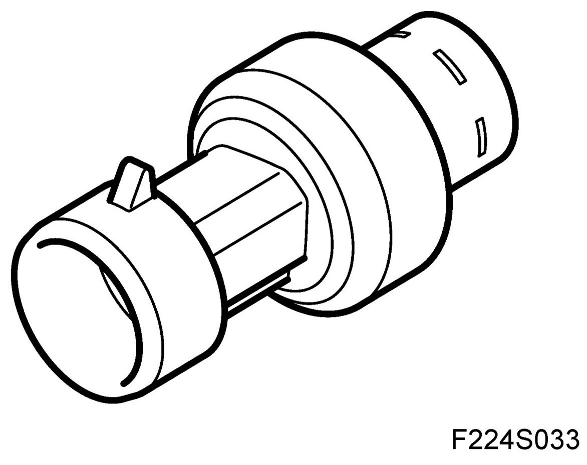
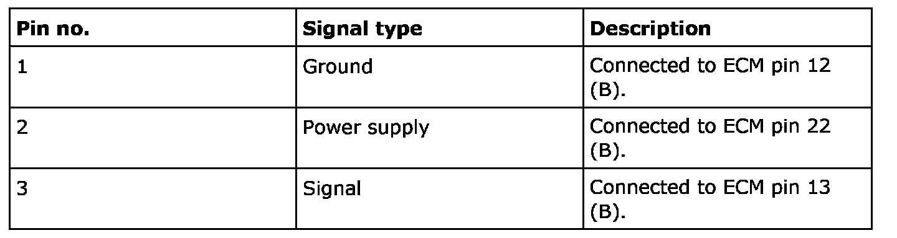
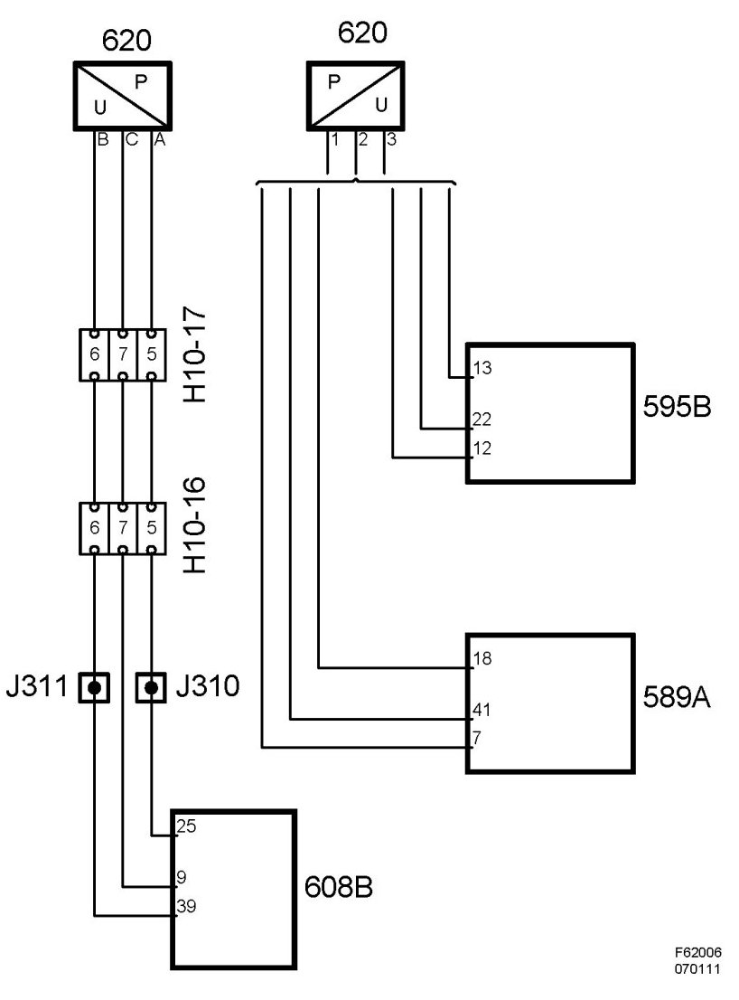

Pressure Sensor, A/C (620) EDC16
Pressure Sensor, A/C (620) EDC16
Location
Pressure sensor A/C (620)
Main task
Measures the pressure of the A/C system.
Type
Capacitive sensor with integrated electronics for signal conversion.

Connect


Function
The pressure sensor contains two metal-coated ceramic discs mounted close together. The disc closest to the pressure connection is thinner and bends when it comes under pressure. This modifies the capacitance between the metal coatings of the discs as a function of the pressure. Built into the sensor is a circuit which converts the capacitance to an analogue voltage.